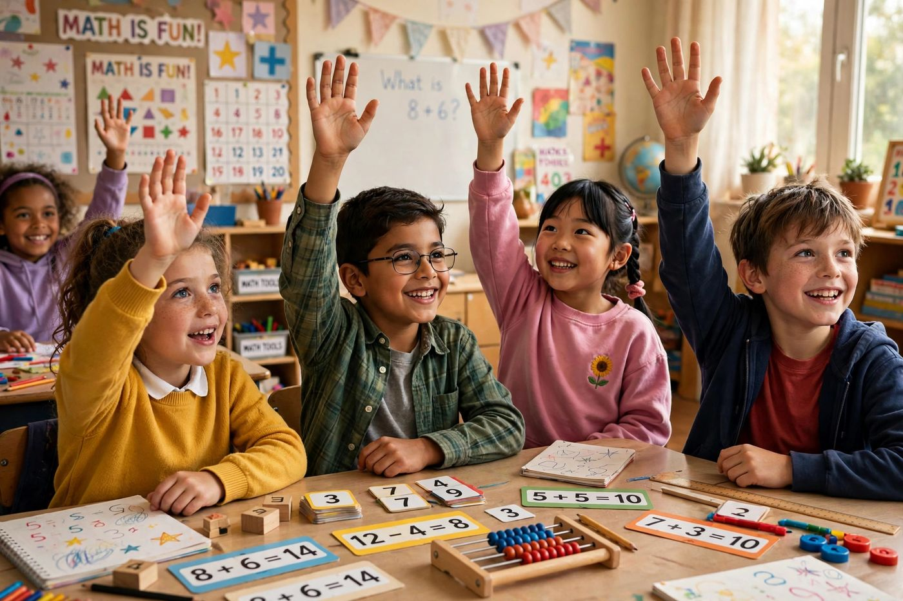
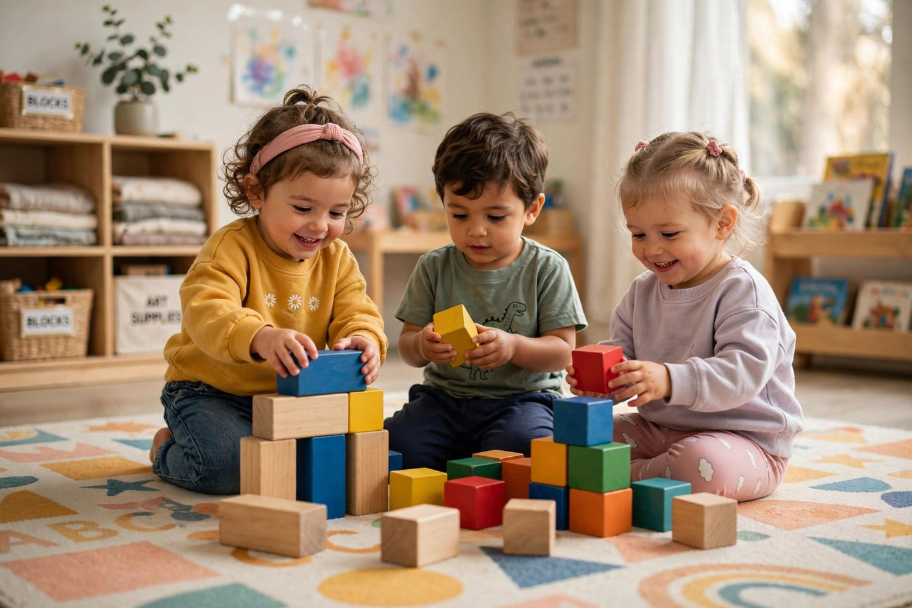
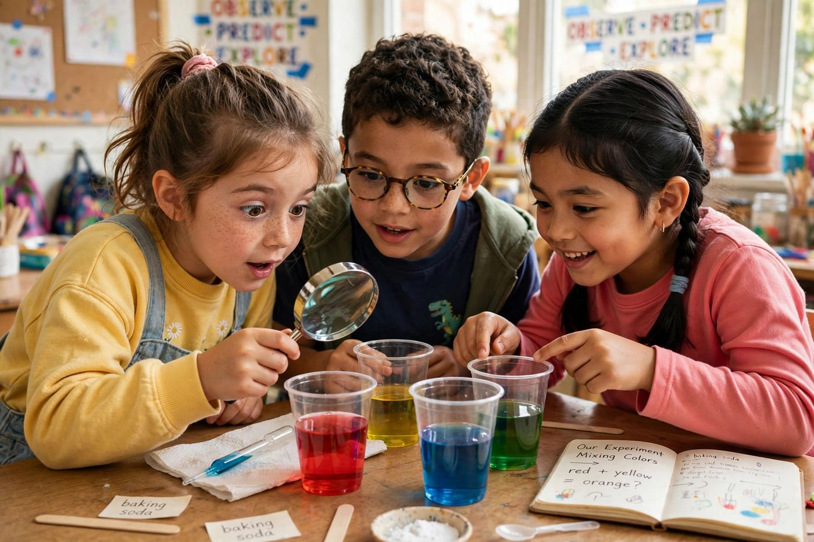

Learning pathways for every stage.

A nurturing introduction to school life through purposeful play, stories, early literacy, numeracy, music, movement, creative activities and social development.
Children strengthen core academic skills while becoming more independent learners.

Deeper academic challenge with projects, leadership roles and preparation for the next stage of schooling.
Balanced days with time to learn, play, create and rest.
Warm greetings, routines and settling into the day.
Literacy and numeracy in focused, joyful lessons.
Science, art, music and hands-on exploration.
Outdoor play, games and physical development.
Story time, sharing and a calm close to the day.
Arrange a school visit or chat with our admissions team. We would love to meet your family.